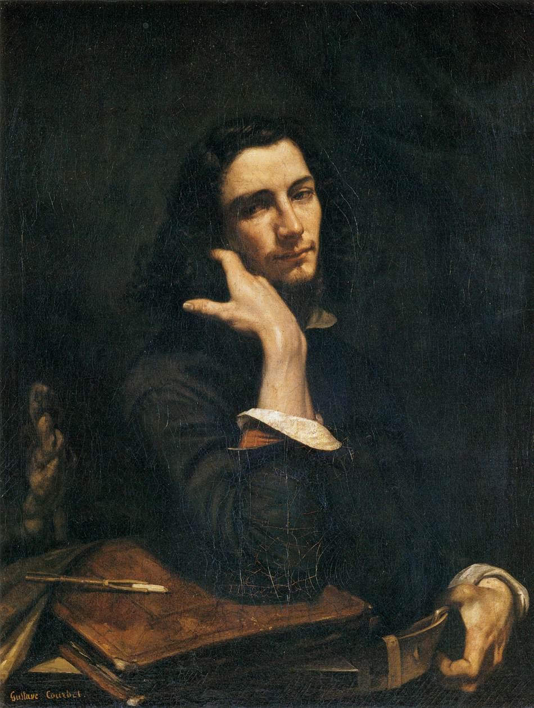

Gustave Courbet
�斯塔夫·库尔� 1819.06.10 - 1877.12.31

Figure 1: 肖�画
法国著å��画家，ç�°å®�ä¸»ä¹‰ç”»æ´¾çš„åˆ›å§‹äººã€‚ä¸»å¼ è‰ºæœ¯åº”ä»¥ç�°å®�为ä¾�æ�®ï¼Œå��对粉饰生活，他的å��言是：“我ä¸�ä¼šç”»å¤©ä½¿ï¼Œå› ä¸ºæˆ‘ä»�æ�¥æ²¡æœ‰è§�过他们。â€�
库尔è´�出生äº�法国东部紧挨ç‘�士的æ�œçœ�奥尔å�—，父亲雷å�‰æ–¯Â·åº“å°”è´�（Régis Oudot Courbet）是一ä½�农场主，其æ¯�å��为å¡�尔维（Sylvie），他的å§�妹ä½�埃（Zoé）ã€�æ³½è�‰ï¼ˆZélie）和朱丽å�¶ï¼ˆJuliette）是他最早的模特。1839年他到巴é»�å¦ä¹ 法律，常到å�¢æµ®å®«è§‚摩大师们的绘画，在父亲的支æŒ�下改å¦ç»˜ç”»ï¼Œå…ˆåœ¨æ–¯ç‰¹æœ¬å’Œæµ·æ£®ç”»å®¤å¦ä¹ ，但ä¸�久离开，自行以临摹大师们的作å“�å¦ä¹ 。
1849年，他å›�到家乡，创作了《ç¢�石工》ã€�《奥å�—的葬礼》ç‰å¦‚å®�å��æ˜ ç”Ÿæ´»çš„ä½œå“�，æˆ�为ç�°å®�主义艺术的领导人，他å�šå†³å��å¯¹æ—§çš„ä¼ ç»Ÿè§‚å¿µå’Œä¹ ä¿—ï¼Œæˆ�为背å�›ä¼ 统画派的新一代艺术家的领袖。他还创作了许多著å��çš„é£�景画，并写作了散文和政论文，呼å��民主和自由。1856年，他访问德国，å�—到çƒçƒˆçš„欢è¿�。
库尔è´�æ‹’ç»�äº†æ‹¿ç ´ä»‘ä¸‰ä¸–æ�ˆäºˆçš„è�£èª‰å†›å›¢å��å—å¥–ç« ï¼Œä½¿ä»–çš„äººæ°”å¤§å¢�，1871å¹´æˆ�ç«‹å·´é»�公社å��，他被选为公社委员ã€�艺术家å��会主å¸ï¼Œè´Ÿè´£å�šç‰©é¦†å·¥ä½œï¼Œä»–å�šå†³ä¸»å¼ æ�¨å€’象å¾�å¸�å›½ä¸»ä¹‰æˆ˜äº‰çš„æ—ºå¤šå§†åœ†æŸ±ã€‚è¿™ä¸ªé“œæŸ±æ˜¯æ‹¿ç ´ä»‘ä¸ºäº†ç‚«è€€ä¾µç•¥æˆ˜ç»©ï¼Œç”¨ç¼´è�·çš„1200门大炮熔铸æˆ�的，上é�¢åˆ»ç�€æ‹¿ç ´ä»‘å�†æ¬¡æˆ˜ç»©ã€‚公社通过法令说它是：“é‡�蛮行为的纪念物â€�，是“对军国主义的èµ�扬â€�，äº�1871å¹´5月16日予以拆æ¯�。巴é»�公社失败å��，他被æ�•å…¥ç‹±ï¼Œåˆ¤å†³ä»–入狱6个月并赔å�¿é‡�新立起旺多姆圆柱所需的资金30万法éƒ�，为躲é�¿è¿™ç¬”债款，出狱å��ä»–å�ªå¥½é€ƒäº¡å›½å¤–，äº�1873å¹´æµ�亡ç‘�士，在ç‘�士æ»äº�饮酒过é‡�é€ æˆ�çš„è‚�硬化。

Figure 2: Marine ou Vue d’Honfleur, 1841

Figure 3: Autoportrait au chien noir, 1842

Figure 4: L’homme à la pipe, 1848

Figure 5: A Burial at Ornans, 1849

Figure 6: The Stone Breakers, 1849

Figure 7: Les Paysans de Flagey, 1850

Figure 8: Lutteurs, 1853

Figure 9: Portrait de Bruyas, 1854

Figure 10: Les Bords de la mer à Palavas, 1854

Figure 11: Le Bord de la Mer a Palavas ou L’Artiste Devant la Mer, 1854

Figure 12: Le Ruisseau du Puits-Noir; vallée de la Loue, 1855

Figure 13: LAtelier du peintre, 1855

Figure 14: L’Amazone, 1856

Figure 15: Valley, 1857

Figure 16: Jo, den vackra irländskan, 1866

Figure 17: Effet de neige, 1866-1868

Figure 18: The Fishing Boat, 1865

Figure 19: La Mer en automne, 1867

Figure 20: La vague, 1869

Figure 21: La mer orageuse dit aussi La vague, 1870

Figure 22: ÄNature morte avec pommes et grenadesl, 1871

Figure 23: A Hut in the Mountains, 1874

Figure 24: Chillon Castle, 1874-1877